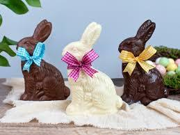

Chocolate Bunnies
Chocolate bunnies are a classic Easter treat, enjoyed by children and adults alike. The come in various sizes and flavors, from milk chocolate to dark chocolate.
Marshmallow Peeps

Marshmallow Peeps are a sweet and colorful Easter staple. These marshmallow candiesare shaped like chicks or bunnies and come in a variety of colors.